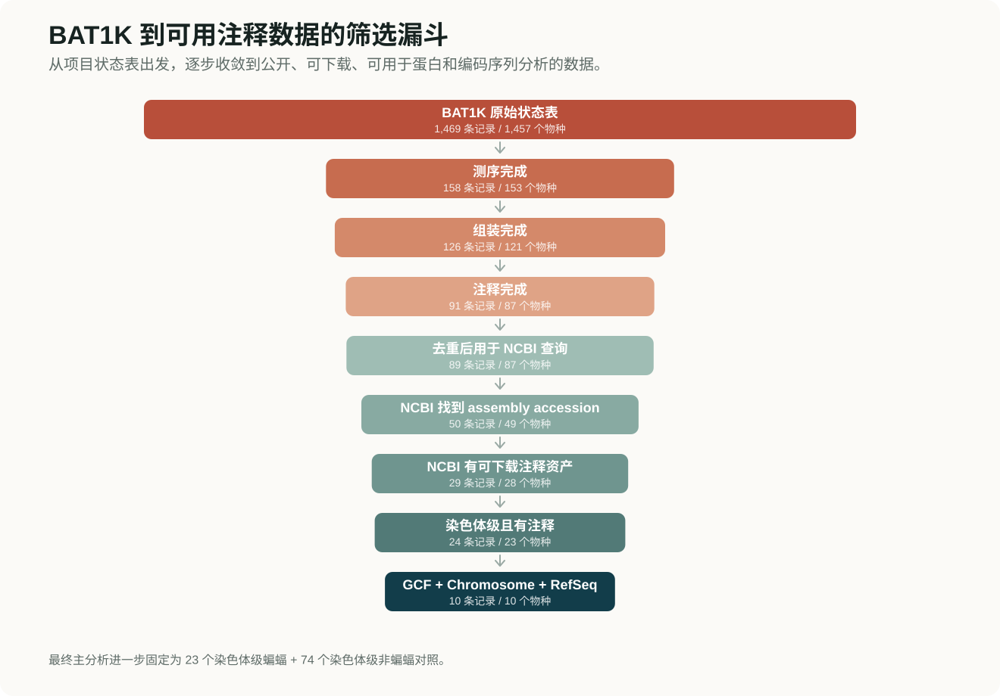
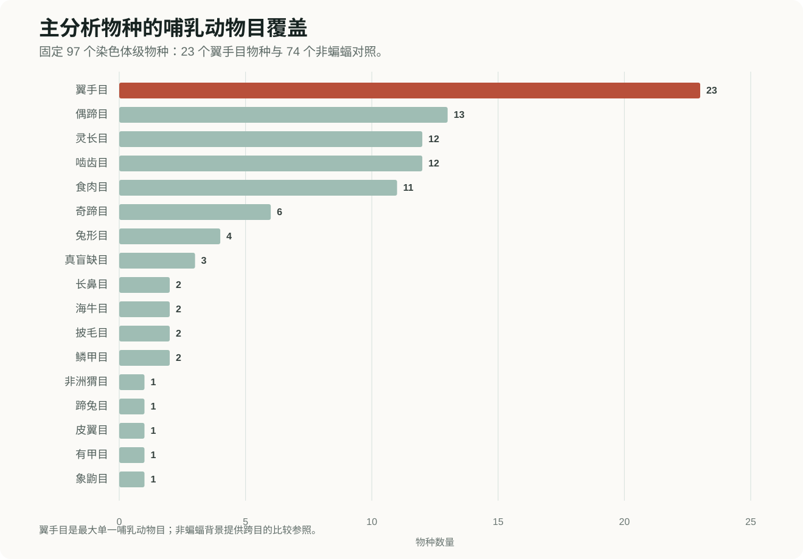
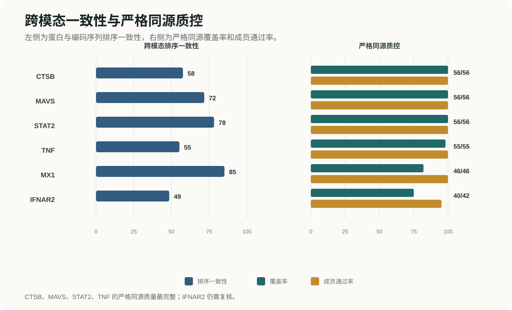
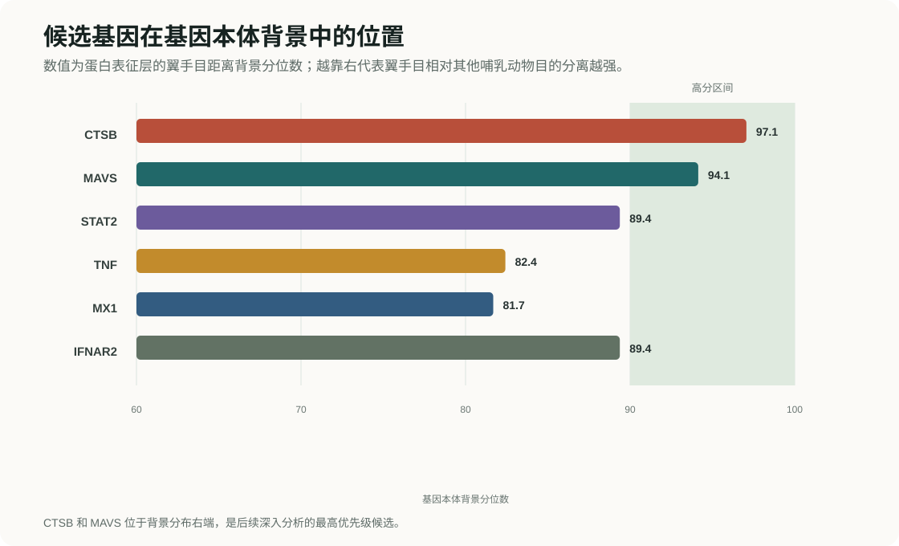
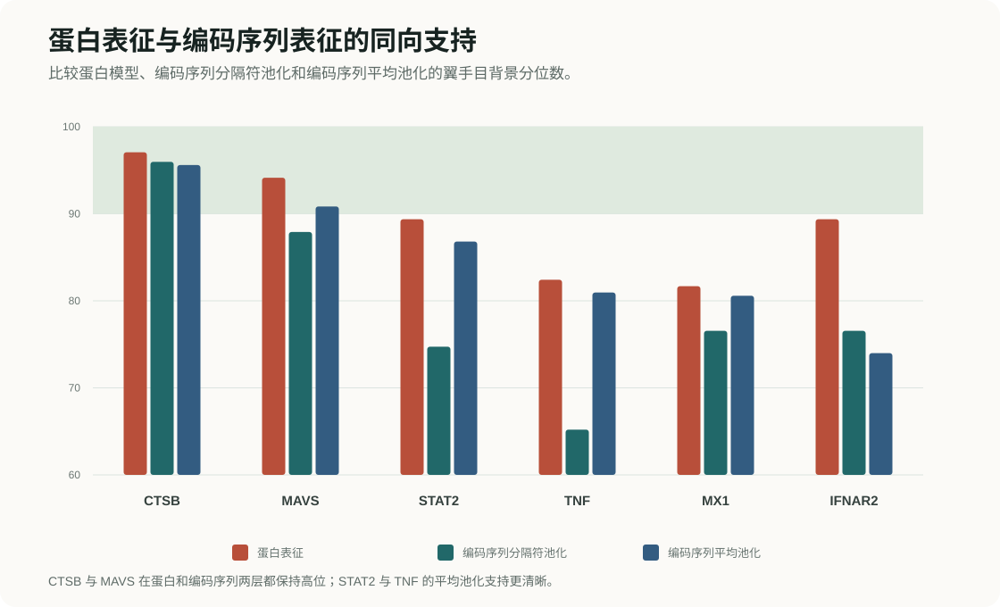

ESM2 蛋白表征 · Carbon-3B 编码序列表征 · 基因本体背景校准
蝙蝠免疫基因图谱
比较 97 个染色体级别哺乳动物物种和 403 个基因，筛选在蛋白和编码序列表征空间中呈现翼手目特殊结构的免疫候选基因。
数据范围
物种、基因和序列提取
这一部分说明分析对象如何从公开数据中收敛而来：先从 BAT1K 状态表和 NCBI 注释资产筛出可用蝙蝠数据，再与跨目的非蝙蝠哺乳动物对照组成主分析物种池，最后在统一物种池中提取目标基因的蛋白和编码序列。
主分析只保留染色体级别组装，固定为 97 个哺乳动物物种：23 个蝙蝠物种和 74 个非蝙蝠对照。这样可以降低组装连续性和注释质量差异对后续表征距离的影响。
蝙蝠侧覆盖 9 个科，非蝙蝠侧覆盖 16 个其他哺乳动物目。这个设计不是简单的“蝙蝠 vs 非蝙蝠”二分类，而是把翼手目放在更广的哺乳动物目级背景中比较。
基因面板由 122 个原始候选/对照基因和 281 个按基因本体分层选择的非免疫背景基因组成，用来判断免疫候选是否真正高于广义非免疫背景。
23 个蝙蝠物种
74 个非蝙蝠对照
122 个核心候选/对照基因
281 个基因本体背景基因


方法
从公开注释基因组到可排序候选基因
方法部分分成四个层次：先固定可比较的物种和基因输入，再用蛋白和编码序列基础模型生成表征，随后计算目级别距离，最后用基因本体背景和严格同源质控收敛候选。
01
输入构建
序列准备
从每个物种的注释文件、蛋白序列和编码序列中建立基因名与蛋白编号的对应关系，提取目标基因的最长蛋白异构体以及匹配的编码序列。
- 主分析只使用 97 个染色体级别哺乳动物物种。
- 同一物种同一基因存在多个转录本时，统一选择最长蛋白。
- 保留物种名、组装号、基因名和蛋白编号，保证后续结果可回溯。
产出：蛋白和编码序列图谱输入
02
双模态表征
蛋白和编码序列表征
蛋白层使用 ESM2 650M 得到 1280 维表示；编码序列层使用 Carbon-3B 得到 3072 维表示。两个模型都不是用蝙蝠标签监督训练，而是作为序列基础表征工具。
- 蛋白过长时按 ESM2 上限截断，并记录截断信息。
- 编码序列输入前只保留 A/C/G/T/N，并裁剪为 6 个碱基的倍数。
- Carbon 结果主要解释分隔符池化和平均池化两种表示。
产出：蛋白表征矩阵 + 编码序列表征矩阵
03
目级别结构
目级别距离评分
对每个基因单独标准化表征，避免不同基因的表征尺度直接混在一起比较。随后计算各哺乳动物目的中心点，并基于中心点距离得到基因级分数。
- 目中心离散度衡量所有哺乳动物目整体分得有多开。
- 翼手目距离衡量翼手目中心点到其他目的平均距离。
- 蛋白模型与 Carbon 模型的排序一致性用于判断跨模态支持。
产出：目中心离散度、翼手目距离、跨模态一致性
04
候选收敛
背景校准与严格质控
把免疫候选基因放入 273 个高覆盖非免疫基因本体背景基因中计算分位数，避免只和少数管家基因对照比较。六个优先基因随后进入严格同源质控。
- 基因本体背景覆盖膜蛋白、代谢、转录调控、细胞骨架、DNA 修复等类别。
- 严格质控检查一对一同源、基因名纯度、编码序列可翻译性和长度异常。
- CTSB、MAVS、STAT2、TNF 的严格同源质量最完整。
产出：基因本体背景分位数 + 严格同源质控
衡量 17 个哺乳动物目的中心点整体分得有多开，不是翼手目特异分数。
计算翼手目中心点到各非蝙蝠目中心点的平均距离。
判断候选基因是否超过广义非免疫功能背景。
核心结果
六个优先基因
综合蛋白 ESM2 表征、Carbon-3B 编码序列表征、基因本体背景分位数、蛋白与编码序列表征一致性以及严格同源质控后，当前目级探索顺序为 CTSB -> MAVS -> STAT2 -> TNF -> MX1 -> IFNAR2。
最高优先级
CTSB
CTSB 同时具有较高的蛋白背景分位数、翼手目特异分位数、编码序列表征支持和完整严格同源质控，是当前证据链最完整的候选。

CTSB
A 级病毒进入 / 溶酶体蛋白酶
蛋白层整体背景分位数和翼手目背景分位数均为 97.1，编码序列两种池化也保持高位；严格同源质控 56/56 通过。
- 蛋白翼手目分位数
- 97.1
- 编码序列平均池化
- 95.6
- 严格同源质控
- 56/56
MAVS
A 级先天免疫信号
蛋白层翼手目背景分位数为 94.1，编码序列平均池化为 90.8，蛋白和编码序列表征的排序一致性较高。
- 蛋白翼手目分位数
- 94.1
- 编码序列平均池化
- 90.8
- 严格同源质控
- 56/56
STAT2
A 级干扰素反应
蛋白层为 A 级候选，编码序列平均池化支持增强，严格同源覆盖完整。
- 蛋白翼手目分位数
- 89.4
- 编码序列平均池化
- 86.8
- 严格同源质控
- 56/56
TNF
A 级炎症与免疫扩增
整体背景分位数最高，编码序列平均池化也支持；翼手目特异分位数相对前两位较弱。
- 蛋白翼手目分位数
- 82.4
- 编码序列平均池化
- 81.0
- 严格同源质控
- 55/55
MX1
B 级干扰素诱导限制因子
蛋白和编码序列表征都有高分，但解释更接近蝙蝠科级结构，暂不作为最干净的全翼手目信号。
- 蛋白翼手目分位数
- 81.7
- 编码序列平均池化
- 80.6
- 严格同源质控
- 46/46
IFNAR2
A 级干扰素受体通路
蛋白层支持较强，但编码序列翼手目分位数和严格质控覆盖相对较弱，后续需要更谨慎复核。
- 蛋白翼手目分位数
- 89.4
- 编码序列平均池化
- 74.0
- 严格同源质控
- 40/42
| 基因 | 通路 | 等级 | 蛋白翼手目分位数 | 编码序列平均池化 | 跨模态一致性 | 严格同源质控 | 解释 |
|---|---|---|---|---|---|---|---|
| CTSB | 病毒进入 / 溶酶体蛋白酶 | A 级 | 97.1 | 95.6 | 0.58 | 56/56 | 翼手目目级信号 |
| MAVS | 先天免疫信号 | A 级 | 94.1 | 90.8 | 0.72 | 56/56 | 翼手目目级信号 |
| STAT2 | 干扰素反应 | A 级 | 89.4 | 86.8 | 0.78 | 56/56 | 翼手目目级信号 |
| TNF | 炎症与免疫扩增 | A 级 | 82.4 | 81.0 | 0.55 | 55/55 | 翼手目目级信号 |
| MX1 | 干扰素诱导限制因子 | B 级 | 81.7 | 80.6 | 0.85 | 46/46 | 蝙蝠科级结构 |
| IFNAR2 | 干扰素受体通路 | A 级 | 89.4 | 74.0 | 0.49 | 40/42 | 翼手目目级信号 |
图表
核心证据图表
图表按证据链排列：基因本体背景中的位置、蛋白与编码序列两层模型是否同向支持、以及六个优先基因的严格同源质控结果。


解释边界
主要结论
1. CTSB 是证据最干净的候选
蛋白表征层和编码序列表征层都把 CTSB 放在基因本体背景的高分区间；严格同源质控也完整通过。它适合作为后续密码子级比对和选择压力检验的第一个目标。
2. MAVS 是第二个优先目标
MAVS 在蛋白表征和 Carbon-3B 平均池化编码序列表征中都有较强的翼手目相关分位数，并且两层模型排序一致性较高，说明蛋白和编码序列表征空间给出了相近方向的信号。
3. STAT2、TNF、MX1、IFNAR2 需要分层解释
STAT2 和 TNF 的严格质控较完整，编码序列平均池化支持较好；MX1 更像蝙蝠科级结构；IFNAR2 在蛋白层较强，但严格质控覆盖和编码序列层的翼手目分位数相对较弱。
4. 这些结果是候选发现，不是选择检验结论
表征空间距离可以指出哪些基因值得深挖，但不能单独证明正选择或功能改变。下一步应对优先基因做严格同源序列比对、基因树与物种树一致性检查，并运行分支选择检验、基因水平选择检验、密码子模型或结构功能验证。
不足与展望
目前的不足与展望
当前结果适合作为候选发现和汇报展示，但还不应被解释为已经完成的进化机制证明。后续需要把表征空间信号、系统发育关系和传统进化分析更紧密地连接起来。
1. 表征分数设计仍然偏粗
现在的分数主要基于中心点距离和分位数校准，能有效筛出候选，但对目内变异、物种采样不均衡、基因长度、覆盖度和模型池化方式的处理还比较粗。后续可以加入重采样置信区间、置换检验、长度和覆盖匹配校正，以及更稳健的多指标综合评分。
2. 需要把表征变化放到系统发育树上
目前主要比较不同哺乳动物目的整体位置，还没有显式利用进化先后关系。后续可以先建立可靠的物种树和基因树，再沿树上分支分析表征变化，例如比较祖先节点到后代分支的表征位移，判断信号是否集中在翼手目主干、某些蝙蝠科，还是多个分支独立出现。
3. 同源关系和基因家族复杂性仍需加强
高通量图谱阶段依赖注释基因名和最长转录本，仍可能受到旁系同源、拷贝数变化、错误注释和转录本选择的影响。后续应对高优先级基因逐一做严格一对一同源鉴定、基因树校正和异常序列复核，尤其是干扰素、APOBEC、TRIM、OAS 等复杂基因家族。
4. 表征信号需要与功能和选择证据闭环
表征距离只能说明序列在模型空间中呈现特殊结构，不能直接说明正选择、适应性进化或功能改变。后续应结合密码子级比对、分支模型、位点模型、蛋白结构区域映射、功能位点注释和实验文献，判断高分基因是否对应真实的分子机制。
5. 需要评估模型和背景选择的稳健性
ESM2 和 Carbon-3B 给出的信号可能受模型架构、池化方式和训练语料影响。后续可以比较不同蛋白模型、不同编码序列模型、不同降维或距离度量，并在不同非免疫背景、不同物种子集和不同目级合并策略下检查候选排序是否稳定。
主要文件
主要结果文件
report/version1final_full_methods_results.md：完整方法、分数和结果说明。results/order_gene_scores.main.tsv：122 个核心基因的蛋白表征基因级分数。results/go_background_calibration.main.tsv：85 个免疫基因相对基因本体背景的分位数。results/carbon3b_mean_protein_concordance.main.tsv：编码序列平均池化与蛋白表征的跨模态一致性。results/strict_ortholog_qc_six_genes.gene_qc.tsv：六个优先基因的严格同源质控。